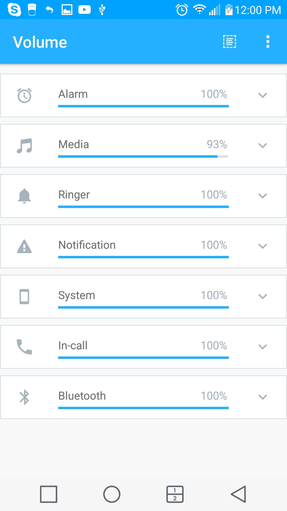

用 Persist 搭一条自动音量链——会议通勤睡觉不再手动拉音量
七类音量通道各管各的、预设快照一键切换、日历蓝牙时间多条件触发，这套工作流让我彻底告别手动调音量。
我每周要做的事里有三样是雷打不动的——周一三五下午开部门周会、每天早上坐地铁 40 分钟、晚上 11 点关灯睡觉。以前这三个场景的音量是我手动切的：进会议室前把响铃拉到 0、通知也关；地铁上媒体音量开到能盖过报站但不震耳朵；睡前把所有通道拉低但闹钟必须保持满格。三个场景来回切，一天至少手动调五六次，偶尔忘了切，要么开会时手机响成傻逼被侧目视，要么地铁上闹钟在兜里炸出一身冷汗。
旧流程卡在哪
安卓的音量不是一条通道，是七条——响铃、通知、媒体、系统、闹钟、语音、蓝牙，各是各的音量条。以前每次切场景不是拉一条，是把所有相关的都拉一遍。比如进会议室：响铃要 0、通知要 0、系统按键音要 0、媒体要拉低但别锁（万一有人发语音），闹钟留高。拉完这五条，手都累了。
更糟的是，系统没有"回到日常档"这个概念。比如会议开了两小时，中间我手动把媒体拉到 30 听了条语音，散会后忘记拉回，晚上回家看视频才发现音量怎么这么大。
新流程：把 Persist 插进三条场景链
我用Persist官网的 Persist 搭了四个预设，每个预设就是一个"整套音量快照"，然后把排程挂上去自动触发：
- 会议预设：响铃 0、通知 0、系统 0、媒体 20、闹钟保持、振动关——触发条件是日历匹配"部门周会"关键词
- 通勤预设：媒体 50、响铃低、通知振动、闹钟高——触发条件是早上 8:00 + 蓝牙断开（地铁上蓝牙耳机一般连不上）
- 睡觉预设：响铃 0、通知 0、系统 0、媒体 0、闹钟 100、振动关——触发条件是每天 23:00
- Default 预设：响铃中、通知低、媒体中、系统 0、闹钟高——不挂排程，只当回档锚点
最后这个 Default 是关键，我一开始没理解它的角色——以为预设就是触发目标。后来发现它是所有排程跑完后的归位点：会议预设到点自动结束？回到 Default。睡觉预设到点了？回到 Default。甚至我临时给静音预设套个 15 分钟定时器，到点也自动回到 Default。现在我把 Default 调成了日常最舒服的档位，不用惦记"散会后拉多少、起床后拉多少"，它自己回去了。


最容易断链的两个环节
权限和电池优化。这两个是我踩过的坑，也是很多人反馈"锁了还是被改"的主要原因。
勿扰访问 + 修改系统设置
Persist 需要两个特殊权限才能稳定监听和弹回音量变化：勿扰访问权限和修改系统设置权限。勿扰访问是 Android 6.0 引入的特殊级别，拿到了才能稳定拦截系统层的音量请求——没给的话，音量锁弹回速度从 100ms 变成几百 ms，用户能感知到"音量动了一下"。
从下载拿了安装包，首次打开应用会有引导跳去系统设置里开，不同品牌入口名略有差异，有的叫"勿扰权限"、有的叫"声音控制"，但流程都是一样的：系统设置 → 声音与振动 → 勿扰模式 → 勿扰访问 → 找到 Persist 打开开关。
电池优化白名单（国产 ROM 必加）
安卓的电池优化机制会在灭屏后杀死"非必要"的后台进程——Persist 没了进程，就没法监听和弹回音量变化。我一开始以为是权限没给全，重开了三遍权限还是不行，后来去Persist文档翻了一下才发现 MIUI 和 HarmonyOS 对勿扰访问还做了二次限制，给了权限但系统服务层依然拦截。
正确做法是把 Persist 加进系统设置的三个地方：电池优化白名单（允许后台运行）、自启动列表（开机自启）、后台冻结名单的排除项。不同品牌入口名字不一样，但统称"电池优化白名单"就够了。加完之后重启一下手机刷新后台进程，权限才算真正生效。
锁通道要按场景锁全套
另一个常见误区是只锁了一条通道。比如开会时只锁了响铃，但通知没锁——短信推送时通知音还是会改音量。或者媒体没锁——开视频时媒体被系统拉满。
正确做法是每个场景把所有受影响的通道都锁了。静音场景要锁响铃+通知+系统+媒体四条，闹钟不锁。会议场景要锁响铃+通知+系统，媒体可以不锁（万一需要听语音），闹钟保持。不要嫌麻烦，七类通道逐条过一遍，比事后尴尬一次划算。
效果和边界
这套流程跑起来之后，我一天手动调音量的次数从五六次降到 0。省的不是那几秒钟拉音量的时间，是开会时不用惦记手机静音、下车不用惦记恢复、睡前不用拉音量的那份注意力。偶尔手动切一次 Default 档，也就手指划两下的事。
但这套工作流也有边界。对有固定日程、固定场景的人来说，预设加排程的组合威力最大；如果你的场景每天都不一样，排程触发条件匹配不上，可能反而要手动改预设参数，那还不如直接拉音量条来得快。另外极少数 App 不走标准 AudioManager API，用系统服务层直接改音量，Persist 的监听抓不到这种，但从我用了快一年的体验来看，这种情况极少见，换那个 App 就好。
总结下来就是：把四条预设搭好、Default 调好、权限和电池白名单给全、每个场景锁对通道——四步做完，音量这件事就从"每天手动做几遍"变成了"设好之后再也不管"。它的开源源码我分别同步到了GitHub、Gitee 和 GitCode，国内访问走后两者更快。